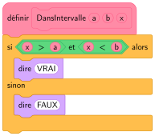
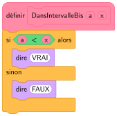

Séquence 5 — Exercices du manuel — CorrigéEnsembles de nombres (p. 16 et 18)Page des Secondes
en classesi le temps le permetà la maisonapprofondissement
Objectif 1 : Reconnaître les ensembles de nombres (\(\mathbb{N}\), \(\mathbb{Z}\), \(\mathbb{D}\), \(\mathbb{Q}\), \(\mathbb{R}\)) et utiliser \(\in\), \(\notin\), \(\subset\)
Objectif 2 : Raisonner sur les ensembles de nombres (contre-exemple, raisonnement par l'absurde)
Objectif 3 : Lire et placer un nombre réel sur la droite numérique
Objectif 4 : Représenter un intervalle, passer d'une inégalité à un intervalle, tester l'appartenance
Objectif 5 : Déterminer l'intersection et la réunion d'intervalles
Objectif 6 : Calculer une valeur absolue et une distance entre deux réels
Objectif 7 : Caractériser un intervalle par une inégalité \(|x-a|\leqslant r\)
Objectif 8 : Encadrer un réel par des décimaux, arrondir avec un nombre de chiffres significatifs adapté
En classe
Ex 2 p 16★★★⏱ 4 minObjectif 1 · Raisonner
« Plus petit ensemble » : on choisit parmi les ensembles du cours \(\mathbb{N}\), \(\mathbb{Z}\), \(\mathbb{D}\), \(\mathbb{Q}\) et \(\mathbb{R}\).
Quel est le plus petit ensemble de nombres auquel appartient chacun des nombres suivants ?
\(\dfrac12\)
\(\sqrt5\)
\(\dfrac{10-4}{3}\)
\(-\sqrt{16}\)
Voir le corrigé
Méthode
On simplifie d'abord chaque nombre, puis on cherche le plus petit ensemble : \(\mathbb{N}\subset\mathbb{Z}\subset\mathbb{D}\subset\mathbb{Q}\subset\mathbb{R}\).
Calculs
① \(\dfrac12=0{,}5\) : nombre fini de décimales : \(\mathbb{D}\).
② \(5\) n'est pas un carré parfait, donc \(\sqrt5\) est irrationnel : \(\mathbb{R}\).
③ \(\dfrac{10-4}{3}=\dfrac63=2\) : \(\mathbb{N}\).
④ \(-\sqrt{16}=-4\) : \(\mathbb{Z}\).
Attention
\(\frac{10-4}{3}\) a l'air d'une fraction, mais c'est l'entier \(2\) : on calcule avant de conclure.
Ex 5 p 16★★★⏱ 4 minObjectif 1 · Raisonner
Dans chaque cas, trouver, lorsque cela est possible, un nombre \(x\) qui remplit les critères suivants.
\(x\in\mathbb{Q}\) et \(x\notin\mathbb{N}\)
\(x\in\mathbb{Q}\) et \(x\notin\mathbb{Z}\)
\(x\in\mathbb{R}\) et \(x\notin\mathbb{Q}\)
\(x\in\mathbb{Q}\) et \(x\notin\mathbb{R}\)
Voir le corrigé
Méthode
On cherche un nombre qui est dans le premier ensemble mais pas dans le second.
Calculs
① \(x=-3\) (rationnel, mais négatif) ou \(x=\dfrac12\).
② \(x=\dfrac12\) (rationnel, mais pas entier).
③ \(x=\sqrt2\) ou \(x=\pi\) (irrationnels).
④ Impossible : \(\mathbb{Q}\subset\mathbb{R}\), tout rationnel est un réel.
Attention
« Lorsque cela est possible » : la réponse « impossible » est attendue au ④, avec sa justification.
Ex 7 p 16★★★⏱ 8 minObjectif 2 · Raisonner
Vrai / Faux. Pour chacune des affirmations suivantes, dire si elle est toujours vraie. Si elle est fausse, donner un contre-exemple.
La différence de deux nombres entiers naturels est un entier naturel.
Le quotient de deux nombres décimaux est un nombre décimal.
Le quotient de deux nombres réels est un nombre rationnel.
Le produit d'un nombre rationnel par un nombre entier relatif est un nombre rationnel.
Voir le corrigé
Méthode
Pour montrer qu'une affirmation est fausse, un contre-exemple suffit ; pour montrer qu'elle est vraie, il faut un raisonnement général.
Calculs
① Faux : \(2\) et \(5\) sont des entiers naturels, mais \(2-5=-3\notin\mathbb{N}\).
② Faux : \(1\) et \(3\) sont décimaux, mais \(\dfrac13=0{,}333\dots\) ne l'est pas.
③ Faux : \(\sqrt2\) et \(1\) sont réels, mais \(\dfrac{\sqrt2}{1}=\sqrt2\notin\mathbb{Q}\).
④ Vrai : si \(r=\dfrac ab\) (\(a\in\mathbb{Z}\), \(b\in\mathbb{Z}^*\)) et \(k\in\mathbb{Z}\), alors \(r\times k=\dfrac{a\times k}{b}\) avec \(a\times k\in\mathbb{Z}\) : c'est un rationnel.
Ex 8 p 16★★★⏱ 4 minObjectif 2 · Raisonner
Le professeur de mathématiques propose l'affirmation :
« Le produit de deux nombres irrationnels est toujours un nombre rationnel. »
Josy répond : « Vrai, par exemple, \(\sqrt2\times\sqrt2=2\in\mathbb{Q}\) ».
Marc répond : « Faux, par exemple, \(\sqrt5\times\sqrt2\notin\mathbb{Q}\) ».
Quel élève a raison ?
Voir le corrigé
On repère
L'affirmation contient « toujours » : elle parle de tous les produits de deux irrationnels.
Calculs
Josy donne un exemple où ça marche : il montre seulement que le produit peut être rationnel.
Marc donne un contre-exemple : \(\sqrt5\times\sqrt2=\sqrt{10}\), et \(10\) n'est pas un carré parfait, donc \(\sqrt{10}\) est irrationnel.
Conclusion
C'est Marc qui a raison : un seul contre-exemple suffit pour prouver qu'une affirmation « toujours vraie » est fausse.
Attention
Un exemple ne démontre jamais une propriété générale.
Ex 12 p 16★★★⏱ 4 minObjectif 2 · Chercher
Trouver deux nombres irrationnels différents dont le produit est un nombre irrationnel.
Voir le corrigé
Méthode
On essaie avec des racines carrées : \(\sqrt a\times\sqrt b=\sqrt{a\times b}\), irrationnel si \(a\times b\) n'est pas un carré parfait.
Calculs
\(\sqrt2\times\sqrt3=\sqrt6\), et \(6\) n'est pas un carré parfait : \(\sqrt6\) est irrationnel.
Conclusion
\(\sqrt2\) et \(\sqrt3\) conviennent (autre exemple : \(\sqrt2\) et \(\pi\)).
Ex 13 p 16★★★⏱ 4 minObjectif 2 · Chercher
Trouver deux nombres irrationnels différents dont le produit est un nombre entier naturel.
Voir le corrigé
Méthode
On cherche \(\sqrt a\times\sqrt b=\sqrt{a\times b}\) avec \(a\times b\) carré parfait, mais \(a\) et \(b\) non carrés parfaits.
\(\sqrt2\) et \(\sqrt8\) conviennent : deux irrationnels différents dont le produit est l'entier naturel \(4\).
Attention
\(\sqrt2\times\sqrt2=2\) ne convient pas : les deux nombres doivent être différents.
Ex 14 p 18★★★⏱ 8 minObjectif 4 · Représenter
Recopier et compléter le tableau comme dans l'exemple de la première ligne.
Inégalité
Intervalle
Représentation graphique
\(2\leqslant x\leqslant4\)
\(x\in[2~;~4]\)
\(0<x\leqslant5\)
\(x\in\,]0~;~5]\)
\(x\in\,]{-3}~;~7[\)
\(x\in\,]{-\infty}~;~4]\)
\(3\leqslant x\)
Voir le corrigé
Méthode
Crochet tourné vers le nombre : borne comprise (\(\leqslant\)) ; tourné vers l'extérieur : borne exclue (\(<\)). Du côté de \(\pm\infty\), le crochet est toujours ouvert.
Calculs
\(0<x\leqslant5\)
\(]0~;~5]\)
\(-3<x<7\)
\(]{-3}~;~7[\)
\(x\leqslant4\)
\(]{-\infty}~;~4]\)
\(3\leqslant x\)
\([3~;~+\infty[\)
\(-1<x\leqslant1\)
\(]{-1}~;~1]\)
droite donnée
\(x\geqslant2\)
\([2~;~+\infty[\)
droite donnée
Attention
Avant-dernière ligne : le crochet en \(-1\) est tourné vers l'extérieur (\(-1\) exclu), celui en \(1\) vers le nombre (\(1\) compris).
Ex 21 p 18★★★⏱ 10 minObjectif 5 · Raisonner
Écrire chaque condition sous forme d'intersection et trouver l'ensemble des réels \(a\) appartenant à cette intersection.
\(a<3\) et \(a>-6\)
\(a\geqslant-5\) et \(-a\geqslant-7\)
\(2a+1<3\) et \(3a-1\geqslant0\)
\(3(2-a)<3\) et \(a-1\geqslant2\)
Voir le corrigé
Méthode
« et » donne l'intersection \(\cap\) : on garde les réels qui vérifient les deux conditions à la fois.
Calculs
① \(]{-\infty}~;~3[\,\cap\,]{-6}~;~+\infty[\;=\;]{-6}~;~3[\). ② \(-a\geqslant-7\Longleftrightarrow a\leqslant7\) : \([-5~;~+\infty[\,\cap\,]{-\infty}~;~7]=[-5~;~7]\). ③ \(2a<2\Longleftrightarrow a<1\) ; \(3a\geqslant1\Longleftrightarrow a\geqslant\dfrac13\) : \(]{-\infty}~;~1[\,\cap\left[\dfrac13~;~+\infty\right[\;=\left[\dfrac13~;~1\right[\). ④ \(3(2-a)<3\Longleftrightarrow2-a<1\Longleftrightarrow a>1\) ; \(a-1\geqslant2\Longleftrightarrow a\geqslant3\) : \(]1~;~+\infty[\,\cap[3~;~+\infty[\;=[3~;~+\infty[\).
Attention
Au ②, on multiplie par \(-1\) : \(\geqslant\) devient \(\leqslant\).
Ex 22 p 18★★★⏱ 6 minObjectif 6 · Calculer
Parmi les nombres suivants, lesquels sont égaux à leur valeur absolue ?
\(2\)
\(3-\dfrac83\)
\(25-9\pi\)
\(\dfrac12-\dfrac13\)
\(\sqrt2-\sqrt5\)
\(-2+9\times(-3)\)
Voir le corrigé
Propriété utilisée
Un nombre est égal à sa valeur absolue si et seulement s'il est positif (ou nul).
Calculs
① \(2>0\) : oui.
② \(3-\dfrac83=\dfrac93-\dfrac83=\dfrac13>0\) : oui.
③ \(9\pi\approx28{,}27\), donc \(25-9\pi\approx-3{,}27<0\) : non.
④ \(\dfrac12-\dfrac13=\dfrac16>0\) : oui.
⑤ \(\sqrt2<\sqrt5\), donc \(\sqrt2-\sqrt5<0\) : non.
⑥ \(-2+9\times(-3)=-2-27=-29<0\) : non.
Ex 23 p 18★★★⏱ 5 minObjectif 6 · Calculer
Donner la valeur absolue des nombres suivants.
\(-5\)
\(\dfrac{-2}{-3}\)
\(-\sqrt{289}\)
\(3-\dfrac23\times(6-4)\)
Voir le corrigé
Méthode
On simplifie le nombre, puis : s'il est positif, on le garde ; s'il est négatif, on prend son opposé.
Calculs
① \(|-5|=5\). ② \(\dfrac{-2}{-3}=\dfrac23>0\) : \(\left|\dfrac23\right|=\dfrac23\). ③ \(-\sqrt{289}=-17\) : \(|-17|=17\). ④ \(3-\dfrac23\times(6-4)=3-\dfrac43=\dfrac53>0\) : \(\left|\dfrac53\right|=\dfrac53\).
Attention
Au ④, la multiplication est prioritaire sur la soustraction.
Ex 26 p 18★★★⏱ 4 minObjectif 7 · Raisonner
Pour chacune des inégalités suivantes, justifier si elle est vérifiée par le nombre \(2\) ou non.
\(|x-3|\leqslant2\)
\(|x-3|<1\)
\(|x+3|\leqslant2\)
\(|x-2|<1\)
Voir le corrigé
Méthode
On remplace \(x\) par \(2\) et on compare.
Calculs
① \(|2-3|=|-1|=1\) et \(1\leqslant2\) : oui. ② \(|2-3|=1\) et \(1<1\) est faux : non. ③ \(|2+3|=5\) et \(5>2\) : non. ④ \(|2-2|=0\) et \(0<1\) : oui.
Attention
Au ②, l'inégalité est stricte : \(1\) n'est pas strictement inférieur à \(1\).
Ex 30 p 18★★★⏱ 6 minObjectif 8 · Calculer
Donner un encadrement des nombres suivants à \(10^{-3}\) près.
\(\dfrac17\)
\(0{,}758\,6\)
\(\sqrt{17}\)
\(2{,}356\times10^{-3}\)
Voir le corrigé
Méthode
« À \(10^{-3}\) près » : on encadre par deux décimaux à trois décimales qui se suivent (amplitude \(0{,}001\)).
Calculs
① \(\dfrac17\approx0{,}142\,857\) : \(0{,}142<\dfrac17<0{,}143\). ② \(0{,}758<0{,}758\,6<0{,}759\). ③ \(\sqrt{17}\approx4{,}123\,1\) : \(4{,}123<\sqrt{17}<4{,}124\). ④ \(2{,}356\times10^{-3}=0{,}002\,356\) : \(0{,}002<0{,}002\,356<0{,}003\).
Attention
Au ④, on écrit d'abord le nombre en écriture décimale.
Ex 31 p 18★★★⏱ 6 minObjectif 8 · Calculer
Donner un encadrement d'amplitude \(10^{-2}\) des nombres suivants.
\(-327{,}426\)
\(\dfrac58\)
\(\sqrt2\)
\(4{,}526\,86\times10^{2}\)
Voir le corrigé
Méthode
« Amplitude \(10^{-2}\) » : les deux bornes ont deux décimales et diffèrent de \(0{,}01\).
Calculs
① \(-327{,}43<-327{,}426<-327{,}42\). ② \(\dfrac58=0{,}625\) : \(0{,}62<\dfrac58<0{,}63\). ③ \(\sqrt2\approx1{,}414\) : \(1{,}41<\sqrt2<1{,}42\). ④ \(4{,}526\,86\times10^2=452{,}686\) : \(452{,}68<452{,}686<452{,}69\).
Attention
Au ①, le nombre est négatif : la borne de gauche est \(-327{,}43\) (plus petit que \(-327{,}42\)).
Ex 6 p 16★★★⏱ 5 minObjectif 1 · Raisonner
Lesquels de ces nombres sont décimaux ?
\(-5\)
\(\dfrac57\)
\(\dfrac{3}{40}\)
\(\dfrac{40}{3}\)
Voir le corrigé
Méthode
Un nombre est décimal s'il s'écrit \(\dfrac{a}{10^n}\) (\(a\in\mathbb{Z}\), \(n\in\mathbb{N}\)), c'est-à-dire avec un nombre fini de décimales. Pour une fraction irréductible, le dénominateur ne doit contenir que des facteurs \(2\) et \(5\).
Calculs
① \(-5=\dfrac{-5}{10^0}\) : décimal.
② \(\dfrac57=0{,}714\,285\,714\,285\dots\) (écriture illimitée) : non décimal.
③ \(\dfrac{3}{40}=\dfrac{3\times25}{40\times25}=\dfrac{75}{1\,000}=0{,}075\) : décimal.
④ \(\dfrac{40}{3}=13{,}333\dots\) : non décimal.
Attention
\(\frac{3}{40}\) et \(\frac{40}{3}\) se ressemblent, mais seul le dénominateur compte : \(40=2^3\times5\) convient, \(3\) non.
Ex 4 p 16★★★⏱ 10 minObjectif 2 · Communiquer
Vrai / Faux. Soit \(x\in\mathbb{N}\). Pour chacune des affirmations suivantes, dire si elle est fausse ou toujours vraie. Si elle est fausse, donner un contre-exemple et donner le plus petit ensemble qui la rende toujours vraie.
\(2x+1\in\mathbb{N}\)
\(2x+1\in\mathbb{Q}\)
\(3x-7\in\mathbb{N}\)
\(\dfrac{x-6}{2}\in\mathbb{Z}\)
\(\dfrac{x+1}{\sqrt2}\in\mathbb{R}\)
\(\sqrt{x}\in\mathbb{Q}\)
Voir le corrigé
Méthode
« Toujours vraie » se démontre par un raisonnement général ; « fausse » se prouve avec un seul contre-exemple. On teste \(x=0\), \(x=1\), \(x=2\)…
Calculs
① Vrai : \(2x\) est un entier positif, donc \(2x+1\) aussi.
② Vrai : \(2x+1\in\mathbb{N}\) et \(\mathbb{N}\subset\mathbb{Q}\).
③ Faux : pour \(x=0\), \(3x-7=-7\notin\mathbb{N}\). C'est toujours un entier : toujours vrai avec \(\mathbb{Z}\).
④ Faux : pour \(x=1\), \(\dfrac{1-6}{2}=-2{,}5\notin\mathbb{Z}\). Un entier divisé par \(2\) a au plus une décimale : toujours vrai avec \(\mathbb{D}\).
⑤ Vrai : c'est le quotient de deux réels, avec \(\sqrt2\neq0\).
⑥ Faux : pour \(x=2\), \(\sqrt2\notin\mathbb{Q}\). Toujours vrai avec \(\mathbb{R}\) (\(x\geqslant0\)).
Attention
Au ⑥, \(x=0\), \(1\), \(4\), \(9\) donnent des entiers : un seul exemple qui marche ne prouve rien.
Ex 15 p 18★★★⏱ 5 minObjectif 4 · Raisonner
Compléter avec \(\in\) ou \(\notin\).
\(2\ \dots\ ]1~;~3[\)
\(0\ \dots\ [-1~;~2[\)
\(\dfrac13\ \dots\ [0~;~3]\)
\(2\ \dots\ ]{-2}~;~2[\)
\(\sqrt2\ \dots\ [-3~;~1]\)
\(0\ \dots\ ]0~;~+\infty[\)
\(-100\ \dots\ ]{-\infty}~;~1[\)
\(\dfrac{1}{10}\ \dots\ [0{,}01~;~0{,}2[\)
Voir le corrigé
Méthode
On regarde si le nombre est entre les bornes, puis, s'il est sur une borne, le sens du crochet.
Calculs
① \(2\in\,]1~;~3[\) ② \(0\in[-1~;~2[\)
③ \(\frac13\in[0~;~3]\) ④ \(2\notin\,]{-2}~;~2[\) (borne exclue)
⑦ \(-100\in\,]{-\infty}~;~1[\) ⑧ \(\frac{1}{10}=0{,}1\) et \(0{,}01\leqslant0{,}1<0{,}2\) : \(\frac1{10}\in[0{,}01~;~0{,}2[\)
Attention
Aux ④ et ⑥, le nombre est sur la borne : c'est le crochet qui décide.
Ex 33 p 18★★★⏱ 4 minObjectif 4 · Modéliser
L'Insee estime qu'un couple avec deux enfants appartient à la classe moyenne quand les revenus du foyer sont situés dans l'intervalle \([3\,253~;~5\,609]\).
M. Martin gagne \(2\,731\) € et Mme Martin gagne \(2\,732\) €. Ils ont deux enfants qui ne rapportent aucun revenu. La famille appartient-elle à la classe moyenne ?
Voir le corrigé
On repère
On compare les revenus du foyer (la somme des deux salaires) à l'intervalle \([3\,253~;~5\,609]\).
Calculs
\(2\,731+2\,732=5\,463\) €, et \(3\,253\leqslant5\,463\leqslant5\,609\).
Conclusion
\(5\,463\in[3\,253~;~5\,609]\) : la famille appartient à la classe moyenne.
Attention
Chaque salaire seul est en dehors de l'intervalle : c'est le revenu du foyer qui compte.
Ex 20 p 18★★★⏱ 12 minObjectif 5 · Représenter
Chaque assertion suivante est supposée vraie. Dans chaque cas, écrire, sous forme d'intervalle ou de réunion d'intervalles, le plus petit ensemble auquel appartient \(x\).
\(x\geqslant3\) ou \(x\leqslant0\)
\(x-6>0\) ou \(5x\leqslant5\)
\(x\leqslant2\) ou \(-4x\leqslant-20\)
\(x\geqslant3\) ou \(3x\geqslant12\)
\(7x-4\geqslant3\) ou \(1-x>0\)
\(1-x>-3\) ou \(2x+1\leqslant7\)
Voir le corrigé
Méthode
On résout chaque inégalité, puis « ou » donne la réunion \(\cup\) : on garde les réels qui vérifient au moins une des deux conditions.
Calculs
① \(x\geqslant3\) ou \(x\leqslant0\) : \(]{-\infty}~;~0]\cup[3~;~+\infty[\). ② \(x>6\) ou \(x\leqslant1\) : \(]{-\infty}~;~1]\cup\,]6~;~+\infty[\). ③ \(-4x\leqslant-20\Longleftrightarrow x\geqslant5\) (on divise par \(-4\)) : \(x\leqslant2\) ou \(x\geqslant5\) : \(]{-\infty}~;~2]\cup[5~;~+\infty[\). ④ \(x\geqslant3\) ou \(x\geqslant4\) : \([3~;~+\infty[\), car \([4~;~+\infty[\,\subset[3~;~+\infty[\). ⑤ \(7x\geqslant7\Longleftrightarrow x\geqslant1\) ; \(1-x>0\Longleftrightarrow x<1\) : tout réel vérifie l'une des deux : \(\mathbb{R}\). ⑥ \(1-x>-3\Longleftrightarrow x<4\) ; \(2x\leqslant6\Longleftrightarrow x\leqslant3\) : \(]{-\infty}~;~4[\).
Attention
Au ⑥, la réunion de \(]{-\infty}~;~4[\) et de \(]{-\infty}~;~3]\) est le plus grand des deux : \(]{-\infty}~;~4[\).
Ex 24 p 18★★★⏱ 6 minObjectif 6 · Calculer
Calculer les valeurs absolues suivantes.
\(\left|10^{-7}-10^{-3}\right|\)
\(|17-25|\)
\(|1-\sqrt2|\)
\(|-3-\pi|\)
Voir le corrigé
Méthode
On cherche le signe de ce qui est dans la valeur absolue : si c'est négatif, on écrit l'opposé (on échange les deux termes).
Calculs
① \(10^{-7}<10^{-3}\), donc \(\left|10^{-7}-10^{-3}\right|=10^{-3}-10^{-7}=0{,}001-0{,}000\,000\,1=0{,}000\,999\,9\). ② \(|17-25|=|-8|=8\). ③ \(\sqrt2\approx1{,}41>1\), donc \(1-\sqrt2<0\) et \(|1-\sqrt2|=\sqrt2-1\). ④ \(-3-\pi<0\), donc \(|-3-\pi|=3+\pi\).
Attention
On garde les valeurs exactes : \(\sqrt2-1\) et \(3+\pi\), pas des valeurs approchées.
Ex 29 p 18★★★⏱ 5 minObjectif 7 · Calculer
Quel est le plus grand intervalle auquel appartient \(x\) dans chacun des cas suivants ?
\(|x-2|\leqslant3\)
\(x\leqslant15\)
\(|x|\leqslant1\)
\(0\leqslant x\leqslant2\)
Voir le corrigé
Propriété utilisée
Pour \(r>0\) : \(|x-a|\leqslant r\Longleftrightarrow a-r\leqslant x\leqslant a+r\Longleftrightarrow x\in[a-r~;~a+r]\) (centre \(a\), rayon \(r\)).
Calculs
① Centre \(2\), rayon \(3\) : \(x\in[-1~;~5]\). ② \(x\in\,]{-\infty}~;~15]\). ③ \(|x-0|\leqslant1\) : centre \(0\), rayon \(1\) : \(x\in[-1~;~1]\). ④ \(x\in[0~;~2]\).
À la maison
Ex 3 p 16★★★⏱ 5 min 🏠Objectif 1 · Raisonner
« Plus petit ensemble » : on choisit parmi les ensembles du cours \(\mathbb{N}\), \(\mathbb{Z}\), \(\mathbb{D}\), \(\mathbb{Q}\) et \(\mathbb{R}\).
Quel est le plus petit ensemble de nombres auquel appartient chacun des nombres suivants ?
\(\dfrac12+\dfrac13+\dfrac16\)
\(\sqrt{16}-\sqrt{25}\)
\(\dfrac{91}{7}\)
\(\dfrac{34}{2}-\sqrt{289}\)
Voir le corrigé
Méthode
On effectue les calculs jusqu'au bout : une écriture compliquée peut cacher un entier.
Calculs
① \(\dfrac12+\dfrac13+\dfrac16=\dfrac36+\dfrac26+\dfrac16=\dfrac66=1\) : \(\mathbb{N}\).
② \(\sqrt{16}-\sqrt{25}=4-5=-1\) : \(\mathbb{Z}\).
③ \(\dfrac{91}{7}=13\) (car \(7\times13=91\)) : \(\mathbb{N}\).
Pour \(N\) : \(\frac43\approx1{,}33\) et \(\frac53\approx1{,}67\) ; le milieu est \(\frac{1}{2}\left(\frac43+\frac53\right)=\frac32=1{,}5\).
Question 2
Méthode
Chaque graduation de la droite vaut \(0{,}5\) : on écrit chaque nombre sous forme décimale (exacte ou approchée).
Calculs
\(\dfrac54=1{,}25\) (au milieu de \(1\) et \(1{,}5\)) ; \(\dfrac{-2}{5}=-0{,}4\) (juste après \(-0{,}5\)) ; \(\sqrt2\approx1{,}41\) (juste avant \(1{,}5\)).
Ex 16 p 18★★★⏱ 12 min 🏠Objectif 4 · Calculer
Recopier et compléter comme dans l'exemple puis écrire sous forme mathématique en utilisant le symbole \(\Longleftrightarrow\). Exemple : \(x\in[1~;~2]\) si et seulement si \(3x\in[3~;~6]\), soit \(x\in[1~;~2]\Longleftrightarrow3x\in[3~;~6]\).
\(x\in[7~;~20]\) si et seulement si \(7x\in\dots\)
\(x\in\,]{-1}~;~3]\) si et seulement si \(7-x\in\dots\)
\(x\in[-5~;~7]\) si et seulement si \(2x+3\in\dots\)
\(x\in\dots\) si et seulement si \(-2x\in[1~;~+\infty[\)
\(x\in\dots\) si et seulement si \(3-x\in\,]{-\infty}~;~6]\)
\(x\in\dots\) si et seulement si \(7+2x\in[-1~;~1]\)
Voir le corrigé
Méthode
On part de l'encadrement de \(x\) et on fait les mêmes opérations sur les trois membres. Si on multiplie ou divise par un nombre négatif, l'ordre change (et les crochets s'échangent).
Calculs
① \(7\leqslant x\leqslant20\Longleftrightarrow49\leqslant7x\leqslant140\) : \(x\in[7~;~20]\Longleftrightarrow7x\in[49~;~140]\). ② \(-1<x\leqslant3\Longleftrightarrow-3\leqslant-x<1\Longleftrightarrow4\leqslant7-x<8\) : \(x\in\,]{-1}~;~3]\Longleftrightarrow7-x\in[4~;~8[\). ③ \(-5\leqslant x\leqslant7\Longleftrightarrow-10\leqslant2x\leqslant14\Longleftrightarrow-7\leqslant2x+3\leqslant17\) : \(x\in[-5~;~7]\Longleftrightarrow2x+3\in[-7~;~17]\). ④ \(-2x\geqslant1\Longleftrightarrow x\leqslant-\dfrac12\) : \(x\in\left]{-\infty}~;~-\dfrac12\right]\Longleftrightarrow-2x\in[1~;~+\infty[\). ⑤ \(3-x\leqslant6\Longleftrightarrow-x\leqslant3\Longleftrightarrow x\geqslant-3\) : \(x\in[-3~;~+\infty[\Longleftrightarrow3-x\in\,]{-\infty}~;~6]\). ⑥ \(-1\leqslant7+2x\leqslant1\Longleftrightarrow-8\leqslant2x\leqslant-6\Longleftrightarrow-4\leqslant x\leqslant-3\) : \(x\in[-4~;~-3]\Longleftrightarrow7+2x\in[-1~;~1]\).
Attention
Au ②, en multipliant par \(-1\) : \(-1<x\) devient \(-x<1\) et \(x\leqslant3\) devient \(-3\leqslant-x\).
Ex 32 p 18★★★⏱ 8 min 🏠Objectif 5 · Modéliser
Dans la boîte de nuit le Macumba, il faut avoir strictement plus de \(32\) ans pour entrer. Dans la boîte de nuit la Playa, il faut avoir au plus \(40\) ans.
Dans quel intervalle d'âge doit se situer une personne qui veut pouvoir rentrer dans les deux boîtes de nuit ?
Dans quel ensemble doit se situer l'âge d'une personne qui veut pouvoir entrer dans l'une des deux boîtes de nuit ?
Voir le corrigé
On repère
Macumba : âge \(>32\) : \(]32~;~+\infty[\).
Playa : âge \(\leqslant40\) (et un âge est positif) : \([0~;~40]\).
Question 1
Méthode
« Dans les deux » : intersection.
Calculs
\(]32~;~+\infty[\,\cap[0~;~40]=\,]32~;~40]\).
Conclusion
Il faut avoir strictement plus de \(32\) ans et au plus \(40\) ans.
Question 2
Méthode
« Dans l'une des deux » (au moins) : réunion.
Calculs
\([0~;~40]\cup\,]32~;~+\infty[\;=[0~;~+\infty[\).
Conclusion
Tout le monde peut entrer dans au moins une des deux boîtes de nuit.
Attention
Si on comprend « dans une seule des deux exactement » : \([0~;~32]\cup\,]40~;~+\infty[\).
Ex 25 p 18★★★⏱ 5 min 🏠Objectif 6 · Calculer
Dans chaque cas, donner la distance entre les deux nombres réels donnés.
\(-2\) et \(-12\)
\(\dfrac53\) et \(\dfrac76\)
\(-\pi\) et \(2\pi\)
\(-4\) et \(6\)
Voir le corrigé
Propriété utilisée
La distance entre deux réels \(a\) et \(b\) est \(|a-b|\) (ou \(|b-a|\), c'est pareil).
Calculs
① \(|-2-(-12)|=|-2+12|=|10|=10\). ② \(\left|\dfrac53-\dfrac76\right|=\left|\dfrac{10}{6}-\dfrac76\right|=\dfrac36=\dfrac12\). ③ \(|-\pi-2\pi|=|-3\pi|=3\pi\). ④ \(|-4-6|=|-10|=10\).
Attention
Une distance est toujours positive : au ④, la réponse est \(10\), pas \(-10\).
Ex 27 p 18★★★⏱ 8 min 🏠Objectif 6 · Calculer
Résoudre les équations suivantes.
\(|x|=8\)
\(|x|=-5\)
\(|x-1|=3\)
\(|2x+1|=4\)
Voir le corrigé
Méthode
\(|x-a|=r\) signifie « la distance entre \(x\) et \(a\) vaut \(r\) » : si \(r>0\), deux solutions \(a-r\) et \(a+r\) ; si \(r<0\), aucune.
Calculs
① Réels à distance \(8\) de \(0\) : \(S=\{-8~;~8\}\). ② Une valeur absolue est toujours positive : \(S=\emptyset\). ③ Réels à distance \(3\) de \(1\) : \(1-3=-2\) et \(1+3=4\) : \(S=\{-2~;~4\}\). ④ \(2x+1=4\) ou \(2x+1=-4\), soit \(x=\dfrac32\) ou \(x=-\dfrac52\) : \(S=\left\{-\dfrac52~;~\dfrac32\right\}\).
Attention
Les solutions s'écrivent entre accolades : ce sont deux nombres, pas un intervalle.
Approfondissement
Ex 9 p 16★★★⏱ 8 minObjectif 2 · Raisonner
Démo. On considère un cercle dont le périmètre est rationnel. Prouver que son diamètre est nécessairement irrationnel.
Voir le corrigé
On repère
Périmètre d'un cercle : \(P=\pi\times d\), avec \(P\) rationnel (et non nul).
Méthode
Raisonnement par l'absurde : on suppose le contraire de ce qu'on veut montrer et on aboutit à une contradiction.
Calculs
Supposons que \(d\) soit rationnel. Alors \(\pi=\dfrac{P}{d}\) est le quotient de deux rationnels non nuls : \(\pi\) serait rationnel.
Conclusion
C'est faux, car \(\pi\) est irrationnel. Donc le diamètre \(d\) est irrationnel.
Ex 10 p 16★★★⏱ 15 minObjectif 2 · Calculer
Algo. On dit qu'un triangle rectangle est presque isocèle lorsque son hypoténuse est un nombre entier et que les côtés de son angle droit sont des nombres entiers consécutifs.
Montrer qu'un triangle dont les côtés mesurent \(3\) ; \(4\) et \(5\) est un triangle rectangle presque isocèle.
Donner un algorithme permettant d'en trouver d'autres.
Voir le corrigé
Question 1
Propriété utilisée
Réciproque du théorème de Pythagore.
Calculs
Le plus grand côté est \(5\) : \(5^2=25\) et \(3^2+4^2=9+16=25\).
Conclusion
\(5^2=3^2+4^2\) : le triangle est rectangle, d'hypoténuse \(5\) (entier), et les côtés de l'angle droit \(3\) et \(4\) sont deux entiers consécutifs : il est presque isocèle.
Question 2
Méthode
Pour chaque entier \(n\), les côtés de l'angle droit sont \(n\) et \(n+1\) ; l'hypoténuse vaut \(c=\sqrt{n^2+(n+1)^2}\). On garde \(n\) si \(c\) est entier.
from math import sqrt
def presque_isoceles(N):
for n in range(1, N + 1):
c = sqrt(n**2 + (n + 1)**2)
if c == int(c):
print(n, n + 1, int(c))
presque_isoceles(1000)
Conclusion
On obtient \((3~;~4~;~5)\), \((20~;~21~;~29)\), \((119~;~120~;~169)\), \((696~;~697~;~985)\).
Attention
Vérification : \(20^2+21^2=400+441=841=29^2\).
Ex 11 p 16★★★⏱ 8 minObjectif 2 · Raisonner
Vrai / Faux. Les affirmations suivantes sont-elles vraies ou fausses ? Justifier.
Le quotient de deux nombres premiers distincts peut être un entier relatif.
Le quotient de deux nombres premiers distincts peut être un nombre décimal.
Voir le corrigé
On repère
Un nombre premier a exactement deux diviseurs positifs : \(1\) et lui-même (\(2\), \(3\), \(5\), \(7\), \(11\)…).
Question 1
Calculs
Soient \(p\) et \(q\) deux nombres premiers distincts. Si \(\dfrac pq\) était un entier, \(q\) diviserait \(p\). Or les seuls diviseurs positifs de \(p\) sont \(1\) et \(p\), et \(q\neq1\), \(q\neq p\).
Conclusion
Faux : le quotient ne peut pas être un entier.
Question 2
Calculs
\(\dfrac32=1{,}5\) (ou \(\dfrac75=1{,}4\)).
Conclusion
Vrai : le quotient peut être un nombre décimal (un exemple suffit, car on dit « peut être »).
Attention
« Peut être » : un exemple suffit pour dire vrai. « Toujours » : un contre-exemple suffit pour dire faux.
Ex 28 p 18★★★⏱ 10 minObjectif 6 · Chercher
Vrai / Faux. Pour chaque proposition, dire si elle est vraie ou fausse en justifiant.
Pour tout \(x\in\mathbb{R}\), \(1+x^2=\left|1+x^2\right|\).
Pour tout \(k\in\mathbb{Z}\), \(|k|=-k\).
Pour tout \(x\in\mathbb{R}\), \(\left|(-x)^2\right|=-x^2\).
Pour tout \(n\in\mathbb{N}\), \(\left|n^2-n\right|=n^2-n\).
Voir le corrigé
Méthode
Pour « pour tout… », il faut une preuve générale si c'est vrai, et un seul contre-exemple si c'est faux.
Calculs
① Vrai : \(x^2\geqslant0\), donc \(1+x^2\geqslant1>0\) ; un nombre positif est égal à sa valeur absolue.
② Faux : pour \(k=1\), \(|1|=1\neq-1\). (C'est vrai seulement pour \(k\leqslant0\).)
③ Faux : pour \(x=1\), \(\left|(-1)^2\right|=1\neq-1\). (C'est vrai seulement pour \(x=0\).)
④ Vrai : \(n^2-n=n(n-1)\). Si \(n=0\), il vaut \(0\) ; si \(n\geqslant1\), \(n\geqslant0\) et \(n-1\geqslant0\), donc \(n(n-1)\geqslant0\) et \(\left|n^2-n\right|=n^2-n\).
Attention
Au ②, \(|k|=-k\) est vrai pour \(k=-3\) (\(|-3|=3=-(-3)\)), mais pas pour tout \(k\).
En salle informatique (Python)
Ex 18 p 18★★★⏱ 12 minObjectif 4 · Calculer
Python. On donne ci-dessous le même programme en Scratch et en Python.

def DansIntervalle(a, b, x):
if x > a and x < b:
print("VRAI")
else:
print("FAUX")
Que fait ce programme ?
Modifier ce programme pour qu'il teste si un nombre appartient à l'intervalle \([a~;~b]\), puis à l'intervalle \(]a~;~b]\) et enfin à l'intervalle \([a~;~b[\).
Voir le corrigé
Question 1
On repère
Le test est « \(x>a\) et \(x<b\) », c'est-à-dire \(a<x<b\).
Conclusion
Le programme affiche VRAI si \(x\in\,]a~;~b[\), et FAUX sinon.
Question 2
Méthode
Une borne comprise correspond à une inégalité large : >= ou <= en Python.
def DansIntervalle1(a, b, x): # [a ; b]
if x >= a and x <= b:
print("VRAI")
else:
print("FAUX")
def DansIntervalle2(a, b, x): # ]a ; b]
if x > a and x <= b:
print("VRAI")
else:
print("FAUX")
def DansIntervalle3(a, b, x): # [a ; b[
if x >= a and x < b:
print("VRAI")
else:
print("FAUX")
Attention
En Scratch, il n'y a pas de bloc « \(\geqslant\) » : « \(x\geqslant a\) » s'écrit « non (\(x<a\)) ».
Ex 19 p 18★★★⏱ 10 minObjectif 4 · Calculer
Python. On donne ci-dessous le même programme en Scratch et en Python.

def DansIntervalleBis(a, x):
if a < x:
print("VRAI")
else:
print("FAUX")
Que fait ce programme ?
Modifier ce programme pour qu'il teste si un nombre appartient à l'intervalle \([a~;~+\infty[\), puis à l'intervalle \(]{-\infty}~;~a]\) et enfin à l'intervalle \(]{-\infty}~;~a[\).
Voir le corrigé
Question 1
On repère
Le test est « \(a<x\) », c'est-à-dire \(x>a\) ; il n'y a pas de borne à droite.
Conclusion
Le programme affiche VRAI si \(x\in\,]a~;~+\infty[\), et FAUX sinon.
L'ensemble est l'intérieur du rectangle de sommets \((1~;~5)\), \((4~;~5)\), \((4~;~6)\), \((1~;~6)\), avec ses côtés horizontaux mais sans ses côtés verticaux (en bleu ci-dessous).